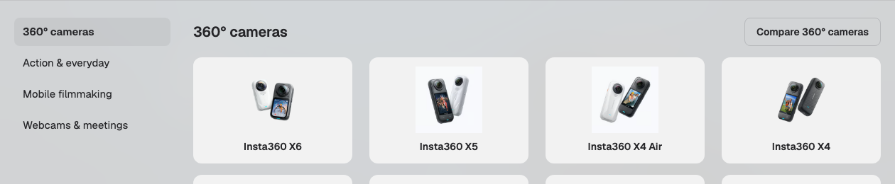
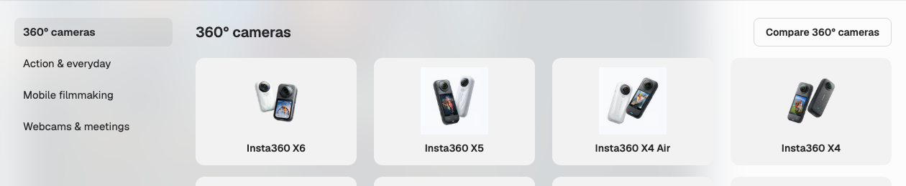
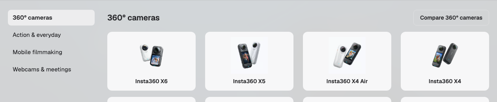
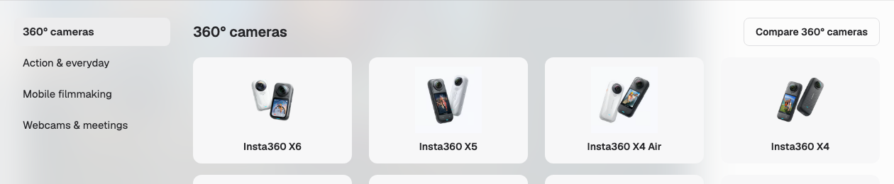
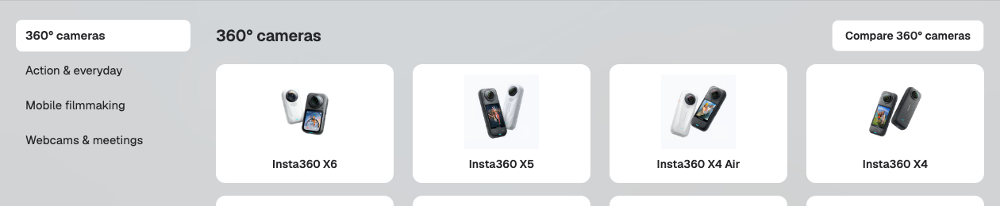
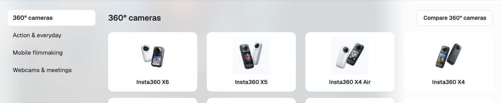

<style>body{margin:16px;font:14px system-ui;background:#fff;display:grid;grid-template-columns:repeat(2,max-content);gap:16px}
figure{margin:0}figcaption{margin-bottom:6px;color:#555}img{display:block;border:1px solid #ddd}</style><figure><figcaption>现状 · 深色 Hero 上</figcaption></figure><figure><figcaption>现状 · 浅色内容上</figcaption></figure><figure><figcaption>① 直接换 token · 深色 Hero 上</figcaption></figure><figure><figcaption>① · 浅色内容上</figcaption></figure><figure><figcaption>② 白色表面 + 边框 token · 深色 Hero 上</figcaption></figure><figure><figcaption>② · 浅色内容上</figcaption></figure>